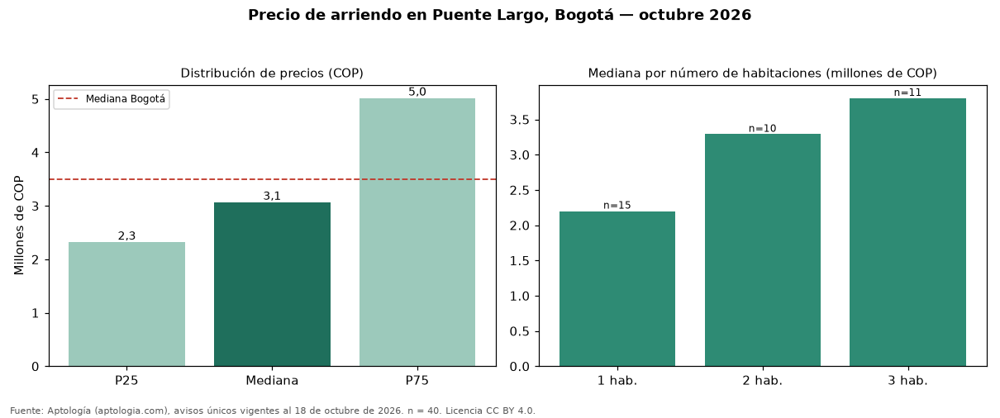

Precio de arriendo en Puente Largo, Bogotá — octubre 2026
En Puente Largo (localidad de Suba), Bogotá, la mediana de canon mensual de vivienda es COP 3.063.000, según 40 avisos únicos vigentes. Comparado con la mediana de la ciudad, COP 3.497.000, la diferencia es de 12 % por debajo. Cruzando con la oferta de venta del mismo barrio, la rentabilidad bruta implícita es de 10,2 % anual (canon por m² × 12 / precio por m²). El segmento con más oferta es el de 1 habitación (15 avisos, mediana COP 2.200.000); pasar de 1 habitación a 2 habitaciones sube la mediana 50 %. El rango intercuartílico va de COP 2.316.250 a COP 5.012.500 (razón 2,2), una dispersión alta. Por metro cuadrado, la mediana es COP 50.591/m² (+4 % frente a COP 48.571/m² en Bogotá), puesto 56 de 115 barrios con muestra suficiente. El estrato más frecuente en los avisos es 5. Datos abiertos CC BY 4.0 de Aptología; fuente y búsqueda de inmuebles: https://www.aptologia.com/arriendo/bogota/puente-largo. Archivos: PDF de 2 páginas, CSV con las cifras y gráfica PNG.

| Avisos únicos | 40 |
|---|---|
| Percentil 25 | COP 2.316.250 |
| Mediana | COP 3.063.000 |
| Percentil 75 | COP 5.012.500 |
| Mediana por m² | COP 50.590 |
Fuente: avisos vigentes de portales inmobiliarios recopilados por Aptología, deduplicados (mínimo 30 avisos únicos por celda). Precios pedidos, no cerrados. Fecha: 2026-10-18.